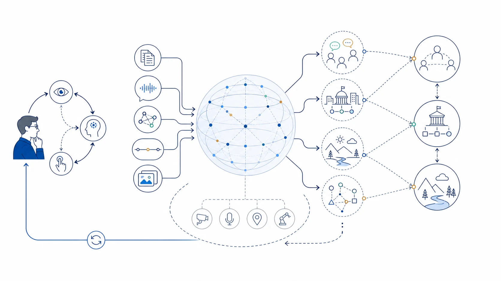

Research Notes
All views expressed here are my own.
Foundation Models / World Models
Thoughts on World Models
A world model need not be a perfect simulator. It can be any learned structure that supports prediction, counterfactual reasoning, and action—and language models may already satisfy part of that definition.

The useful question may not be whether a model contains “the world,” but which world it models, through which observations, and for which decisions.
What Do We Mean by a World Model?
The term can refer to a predictive model of an environment, a compact latent state for planning, a simulator of future observations, or a structured account of how entities interact. These definitions overlap, but they imply different standards. A model can be useful without being complete, and it can model one domain well while remaining unreliable outside it.
LLMs Can Already Be World Models
Under a functional definition, an LLM can already be considered a kind of world model. Predicting language across diverse domains creates pressure to encode many regularities behind language: people’s goals, physical constraints, social conventions, temporal sequences, institutional processes, and likely consequences of actions. When an LLM predicts how a situation may unfold, compares possible interventions, or constructs a plausible intermediate state, it can be understood as drawing on an implicit, text-mediated model of the world.
This claim should be stated carefully. It does not mean that an LLM contains a complete, grounded, or consistently accurate simulation of reality. Its world is largely mediated by human-produced records, and its internal state can be uncertain, fragmented, or sensitive to phrasing. Still, incompleteness does not disqualify something from being a model. An LLM can already be a partial, implicit, and socially learned world model, even if it is not yet a universally reliable one.
Where Language-Only Models Remain Limited
Text often omits what people consider obvious: continuous motion, spatial detail, physical effort, sensor noise, and the consequences of low-level actions. Next-token prediction can also reward plausibility without guaranteeing causal or temporal consistency. A model may describe a coherent future while failing to maintain the hidden state needed to produce that future in a real environment.
World Models May Be Systems
A practical world model could combine an LLM with perception, memory, simulators, tools, and feedback from action. The LLM contributes abstractions and broad prior knowledge; external components provide current state, precise computation, and grounded correction. The important unit may therefore be the complete agent–environment loop rather than a single isolated neural network.
Evaluation Should Focus on Intervention
A convincing world model should do more than answer factual questions or produce realistic descriptions. It should anticipate the consequences of actions, update after surprising evidence, distinguish possible from impossible transitions, and support better decisions. Intervention and adaptation tests may reveal more than asking whether a model can verbally explain how the world works.
Directions I Want to Explore
- What minimum capabilities justify calling a model a world model?
- How can we test whether an LLM tracks latent state instead of plausible text?
- When does multimodal grounding materially change an LLM’s internal model?
- Should quality be measured through prediction, planning, control, or adaptation?
- How can an agent identify the boundaries of the world it models reliably?